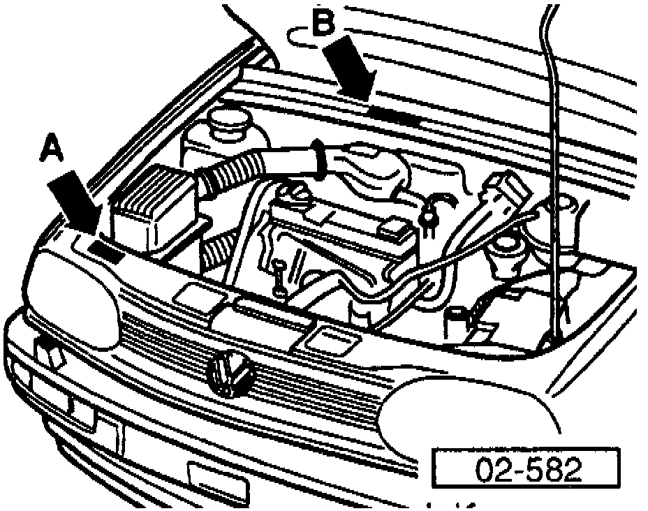
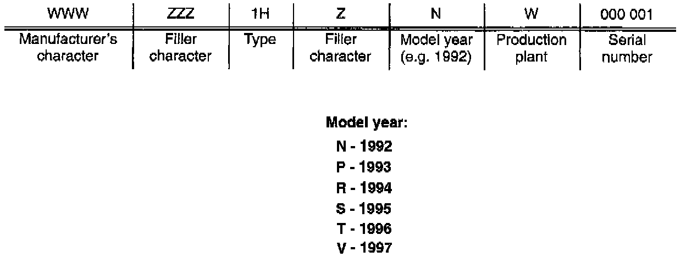

VIN Breakdown

IDENTIFICATION PLATE / NUMBER
A = Identification Plate
^ Located on front lock carrier.
B = Vehicle Identification Number (VIN)
^ Stamped in the rear cross panel of the engine compartment. It is visible through a window in the plenum chamber cover.

VIN NUMBER BREAKDOWN